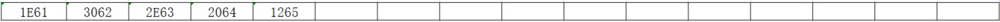
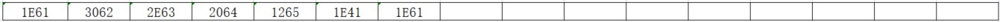
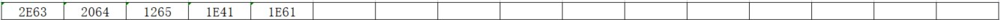

从0开始的汇编语言（十七）
前言
从0开始的汇编语言系列，选用的参考书籍是清华大学出版社，王爽老师的《汇编语言第四版》。该系列属于博主的笔记系列，文中会采用一些书中的例子，图片以及思考题供读者阅读，如需详细学习汇编语言可以购入一本，谢谢。
学习之前我们做如下约定（随着学习深入还会出现新的约定）：
- 十六进制数均以H结尾
- 使用8086CPU作为案例
- 我们使用(地址或寄存器名称)表示一个寄存器或一个内存单元的内容，()内地址是且一定是物理地址
- 我们将idata视作常量
- 我们以reg表示一个寄存器包括ax、ah、sp、bp、si、di等，sreg表示一个段寄存器包括ds、ss、cs、es。
话不多说我们马上开始。
int 9中断例程对键盘输入的处理
大多数有用的程序都需要处理用户的输入，键盘的输入是最为基本的输入。程序和数据通常需要长期存储，磁盘是最常用的存储设备。BIOS为这两种外设的I/O提供了最基本的中断例程，接下来我们就对它们的应用和相关的问题进行讨论。
我们之间已经学习过，键盘的输入将引发9号中断，BIOS提供了int 9中断例程。CPU在9号中断发生后，执行int 9中断例程，从60H端口读出扫描码，并将其转化为相应的ASCII码或状态信息，存储在内存的指定空间(键盘缓冲区或状态字节)中。
一般的键盘输入，在CPU执行完int 9中断例程后，都放到了键盘缓冲区中，键盘缓冲区有16个字单元，可以储存15个按键的扫描码和对应的ASCII码，接下来我们就从逻辑层面看一下键盘输入的扫描码和对应的ASCII码是如何写入键盘缓冲区的。事实上，键盘缓冲区是用环形队列结构管理的内存区。
下面想象这样一个场景，我们按下了键盘上的A，B，C，D，E，Shift_A，A。我们来简要的看一下int 9中断例程都做了什么叭！
1.初始状态下，没有键盘输入，键盘缓冲区空，此时没有任何元素。
2.按下A键，引发了键盘中断，CPU执行int 9中断例程，从60H端口读出A键的通码；然后检测状态字节，看看是否有Shift，Ctrl等切换键按下；发现没有切换键按下，就将A键的扫描码1eH和对应的ASCII码，即字母“a”的ASCII码61H，写入键盘缓冲区。缓冲区的字单元中，高位字节存储扫描码，低位字节存储ASCII码。此时缓冲区内容如下。
3.按下B键，引发了键盘中断，CPU执行int 9中断例程，从60H端口读出B键的通码；然后检测状态字节，看看是否有切换键按下；发现没有切换键按下，就将B键的扫描码30H和对应的ASCII码，即字母“b”的ASCII码62H，写入键盘缓冲区,此时缓冲区内容如下。
4.按下C，D，E键后，缓冲区中的内容如下。

5.按下左Shift键，引发键盘中断；int 9中断例程接收左Shift的通码，设置0040:17处的状态字节的第1位为1，表示左Shift按下。
6.按下A键，引发了键盘中断，CPU执行int 9中断例程，从60H端口读出A键的通码；然后检测状态字节，看看是否切换键按下；发现左Shift被按下，就将A键的扫描码1eH和Shift_A对应的ASCII码，即字母“A”的ASCII码41H，写入键盘缓冲区。此时缓冲区内容如下。
7.松开左Shift键，引发键盘中断；int 9中断例程接收左Shift的断码，设置0040:17处的状态字节的第1位为0，表示左Shift松开。
8.按下A键，引发了键盘中断，CPU执行int 9中断例程，从60H端口读出A键的通码；然后检测状态字节，看看是否切换键按下；发现没有切换键按下，就将A键的扫描码1eH和对应的ASCII码，即字母“a”的ASCII码61H，写入键盘缓冲区。缓冲区的字单元中，高位字节存储扫描码，低位字节存储ASCII码。此时缓冲区内容如下。

使用int 16H中断例程读取键盘缓冲区
BIOS提供了int 16H中断例程供程序员调用。int 16H中断例程中包含的一个最重要的功能是从键盘缓冲区读取一个键盘输入，该功能编号为0。下面的指令从键盘缓冲区读取一个键盘输入，并且将其从缓冲区中删除：
1 | mov ah,0 |
结果是(ah)=扫描码，(al)=ASCII码。接下来我们看一下int16H如何读取键盘缓冲区。
1.执行上述两条指令后，缓冲区中的内容如下：
2.再次执行，缓冲区中内容如下：

3.连续执行5次后，缓冲区为空：
4.再次执行，int 16H检测到键盘缓冲区，发现缓冲区为空，则循环等待，直到缓冲区中有数据。
5.按下A键后，缓冲区中的内容如下：
6.循环等待的int 16H中断例程检测到键盘缓冲区中有数据，将其读出，缓冲区又为空。
ah中内容为1EH，al中内容为61H
从上面我们可以看出，int 16中断例程的0号功能，进行如下的工作：
- 检测键盘缓冲区中是否有数据
- 没有则继续做第一步
- 读取缓冲区第一个字单元中的键盘输入
- 将读取的扫描码送入ah，ASCII码送入al
- 将已读取的键盘输入从缓冲区中删除
可见，BIOS的int 9中断例程和int 16H中断例程是一对相互配合的程序，int 9中断例程向键盘缓冲区中写入，int 16H中断例程从缓冲区中读出。它们写入和读出的时机不同，int 9中断例程是在有键按下的时候向键盘缓冲区中写入数据；而int 16H中断例程是在应用程序对其调用的时候，将数据从键盘缓冲区中读出。我们在编写一般的处理键盘输入的程序的时候，可以调用int 16H从键盘缓冲区中读取键盘的输入。
字符串的输入
用户通过键盘输入的通常不仅仅是单个字符而是字符串。最基本的字符串输入程序，需要具备下面的功能：
- 在输入的同时需要显示这个字符串
- 一般在输入回车符后，字符串输入结束
- 能够删除已经输入的字符
接下来我们试着编写一个接收字符串输入的子程序，实现上面3个基本功能。因为在输入的过程中需要显示，子程序的参数如下：
(dh)、(dl)=字符串在屏幕上显示的行、列位置；ds:si指向字符串的存储空间，字符串以0为结尾符。
首先，我们要先解决字符的输入和删除，每个新输入的字符都存储在前一个输入的字符之后，而删除是从最后面的字符进行的，这一点可以想象我们平时输入输出的场景。可以知道字符的输入和输出是按照栈的访问规则进行的，即后进先出。这样，我们就可以用栈的方式来管理字符串的存储空间，也就是说字符串的存储空间实际上是一个字符栈。字符栈中的所有字符，从栈底到栈顶，组成一个字符串。第二，我们要在输入回车符后，结束这个字符串，这个很好实现，我们可以在输入回车符后在字符串中加入0，表示字符串结束。最后，我们在输入字符串的同时要显示这个字符串，也就是每次有新的字符输入和删除一个字符的时候，都应该重新显示字符串，即从字符栈的栈底到栈顶，显示所有的字符。
现在我们可以简单地确定程序的处理过程：
- 调用int 16H读取键盘输入
- 如果是字符，进入字符栈，显示字符栈中的所有字符；继续执行1
- 如果是退格键，就从字符栈中弹出一个字符，显示字符栈中的所有字符；继续执行1
- 如果是enter键，向字符栈中压入0，返回
可见整个过程中，字符出栈，入栈，显示的操作很频繁，应该写成子程序。完整的接收字符串输入的子程序，如下所示：
1 | getstr: push ax |
应用int 13H中断例程对磁盘进行读写
我们主要以3.5英寸软盘为例，3.5英寸软盘分为上下两面，每面80个磁道，每个磁道又分为18个扇面，每个扇面区的大小为512字节。所以3.5英寸软盘大约是1.44MB。磁盘的实际访问由磁盘控制器进行，我们可以通过控制磁盘控制器来访问磁盘，只能以扇区为单位对磁盘进行读写。在读写扇区的时候，要给出面号，磁道号和扇区号。面号和磁盘号从0开始，而扇区号从1开始。BIOS提供了一些中断例程可以访问磁盘，比如int 13H。如果我们想读取0面0道1扇区的内容到0:200，那么程序是这样的：
1 | mov ax,0 |
其中，(ah)表示int 13H的功能号，(al)表示读取的扇区数，(ch)表示磁道号，(cl)表示扇区号，(dh)表示磁头号(对于软盘即面号，因为一个面用一个磁头来读写)，(dl)表示驱动器号软驱从0开始，0：软驱A，1：软驱B，硬盘从80H开始，80H：硬盘C，81H：硬盘D。如果操作成功(ah)=0，(al)=读入的扇区数，如果操作失败(ah)=出错代码。
结语
至此，汇编的学习告一段落，感谢各位能耐心阅读！更新完整个系列后有一种如释重负的感觉，好像完成了一件大事一样，虽然只是学完了一本书。博主也只是一个在校大学生，刚刚开始写博客，所有内容都是一点点看书，选择性记录的，虽然看起来还是有点像搬运，而且很古板粗糙。。。不过至少整个过程还是有收获滴！接下来，博主也会慢慢的写一写其他的系列，最后再次感谢，可以耐心看本系列的朋友们，我们下个系列见！
 wechat
wechat alipay
alipay